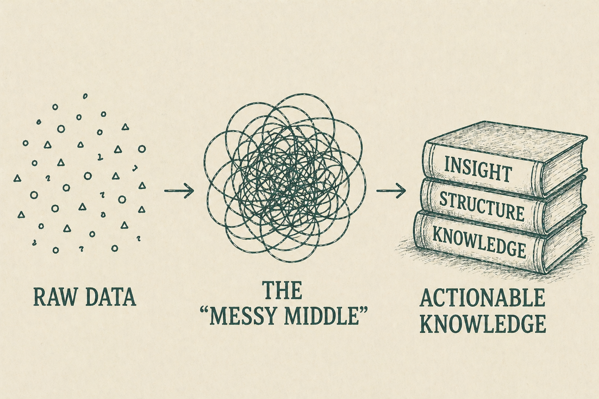

Information Architecture and Rhetoric
The Instability of Information

Rosenfeld, Morville, and Arango define information architecture as “the art and science of shaping information products and experiences to support usability, findability, and understanding.” But their more significant observation is that information “lives in the messy middle” — it requires a receiver to make sense of it.
This instability has profound design implications. As Rosenfeld et al. observe, “No document fully and accurately represents the intended meaning of its author. No label or definition totally captures the meaning of a document. And no two readers experience or understand a particular document or definition or label in quite the same way.” If no label fully captures what a document means, then every structural decision becomes an act of meaning-making — not merely of organization.
Davenport and Prusak’s account of knowledge reinforces this from a knowledge management perspective. Knowledge, they argue, is “a fluid mix of framed experience, values, contextual information, and expert insight.” The user constructs knowledge through interpretation, and the system shapes that interpretation by determining what information is visible and what relationships are implied by its placement. Structure precedes meaning.
Salvo’s ArgumentThe field of technical communication has developed a robust account of IA that makes this rhetorical dimension explicit. Michael Salvo argues that information architecture should be understood as “a site of intervention,” where practitioners move beyond description and analysis to actively shaping the technocultural systems through which communication occurs.
For Salvo, IA is not a passive arrangement of existing content but an act of design that constructs the social and interpretive conditions of communication. Drawing on Kaufer and Butler’s conception of rhetoric as a “design art,” Salvo frames IA as a practice that “engages and changes the world” not by adding content, but by shaping the contexts within which content is understood. This challenges a persistent assumption in IA practice: that organizing information is primarily a functional task, properly evaluated by metrics of efficiency and findability.
Logos, Ethos, and PathosThe three classical rhetorical appeals map onto IA’s structural operations in ways that clarify its persuasive character. The organization and hierarchy of information constitute a form of logical argument: they present relationships between concepts in ways that appear ordered, guiding users toward particular inferences about how ideas connect. Consistency in labeling and predictability in navigation contribute to credibility. They signal that a system is coherent, authoritative, and worthy of trust. When structural cues are unclear or inconsistent, the result is confusion, frustration, and disengagement.
The placement of categories, the specificity of labels, the visibility of certain pathways over others — all function rhetorically by directing attention and shaping expectations. These decisions can privilege certain interpretations while obscuring others, reinforcing particular ways of understanding information without users being aware that a choice was made at all.
For more information about the design implications of this argument, click here to continue reading.
Dalkir, Kimiz. Knowledge Management in Theory and Practice. 2nd ed., MIT Press, 2011.
Davenport, Thomas H., and Laurence Prusak. Working Knowledge: How Organizations Manage What They Know. Harvard Business School Press, 1998.
Rosenfeld, Louis, Peter Morville, and Jorge Arango. Information Architecture for the Web and Beyond. 4th ed., O’Reilly Media, 2015.
Salvo, Michael J. “Rhetorical Action in Professional Space: Information Architecture as Critical Practice.” Journal of Business and Technical Communication, vol. 18, no. 1, 2004, pp. 39–66.